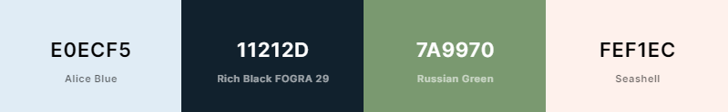

Color Palette
For my color palette, I wanted to choose colors that created a clean and contemporary feel. The cool-tones accomplish that goal making the overall site feel relaxing for the audience.
Palette URL: https://coolors.co/e0ecf5-11212d-7a9970-fef1ec
Utilization of Color
\Alice Blue or #E0ECF5 will be utilized as my sites primary color
Rich Black FOGRA 29 or #11212D will be utilized as my sites secondary color
maily utilized for in the navigation bar, footers, smaller heading text, and paragraph text.
Russian Green or #7A9970 will be utilized as an accent color against Alice Blue.
Seashell or #FEF1EC is also an accent color, but will be utilized against Rich Black FOGRA 29.